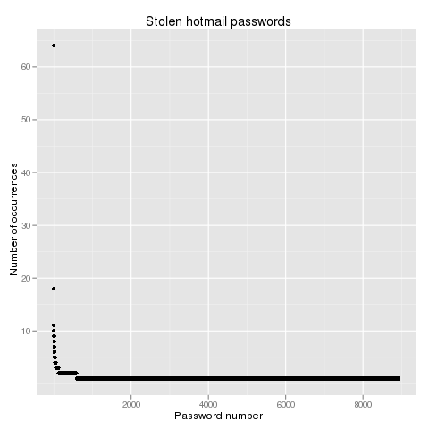
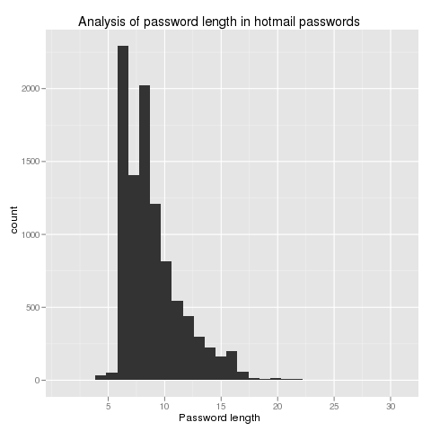

Misc
Hotmail breach
There was recently a password breach on hotmail and some other services. I was curious to see what type of passwords people actually use. I haven't looked at this much in detail, but I did look at the amount of repetition in passwords, as shown in the below picture.

The most interesting takeaway is that only 588 (unique) passwords are repeated out of 8928. This reflects 1498 users sharing a password out of 9838. In other words, 84.8% of users have a unique password, which is surprising (to me, at least).

Unsurprisingly, users have short passwords.
$Id: index.html 355 2009-09-30 16:45:28Z edmcman $